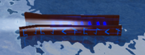

Sluices
From Nikkis
Las compuertas son un elemento de recolección de minerales que se puede obtener en Prospecting.
Al colocar una compuerta en un río se mostrará un temporizador encima de ella que detallará cuándo se llenará hasta alcanzar 1 de su capacidad.
Si se excede la capacidad, la compuerta dejará de recolectar más minerales.
Las compuertas continuarán acumulándose fuera de línea.
▲ Lista de sluices
| Apariencia | Nombre/Descripción | Precio | Estadísticas | Ubicación |
|---|---|---|---|---|
| Caja de compuerta de madera Una caja que filtra automáticamente los objetos de valor del agua corriente, incluso cuando no está en línea! |
$5,000 |
Suerte: 80 Capacidad: 30 Eficiencia: 1 Dureza: 1 |
Rubble Creek | |
| Caja de compuerta de acero Una caja de compuerta estándar utilizada por los buscadores de oro para filtrarlo. ¡Recopila sin conexión! |
$100,000 |
Suerte: 200 Capacidad: 60 Eficiencia: 1,5 Dureza: 2 |
Rubble Creek | |
| Caja de compuerta de oro Una compuerta de alta calidad recubierta de oro, que la protege de la corrosión. |
$655,000 |
Suerte: 400 Capacidad: 75 Eficiencia: 2 Dureza: 3 |
Rubble Creek | |
| Caja de compuerta de obsidiana Una elegante compuerta de obsidiana que corta el agua, lo que le permite tamizar objetos de valor con facilidad. |
$4,000,000 |
Suerte: 1.000 Capacidad: 100 Eficiencia: 2 Dureza: 4 |
Shady Merchant | |
|  | Esclusa encantada Una compuerta encantada con una variedad de hechizos poderosos, que aumentan su suerte y eficiencia a costa de la capacidad. |
$12,000,000 |
Suerte: 2.500 Capacidad: 75 Eficiencia: 3 Dureza: 4 |
Shady Merchant |
| Esclusa de Llama de Dragón Una compuerta dracónica que convierte el mineral en combustible, dejando solo lo más valioso atrás. |
$200,000,000 |
Suerte: 5.000 Capacidad: 125 Eficiencia: 2 Dureza: 5 |
The Magma Furnace | |
| Compuerta Fosilizada Una antigua compuerta fosilizada por el paso del tiempo. Increíblemente lenta, pero con un gran rendimiento una vez llena. |
$800,000,000 |
Suerte: 25.000 Capacidad: 200 Eficiencia: 1 Dureza: 6 |
Ancient Ruins | |
| Esclusa Ártica Una esclusa helada y rápida diseñada para aguas frías del Ártico. |
$10 Billones |
Suerte: 20.000 Capacidad: 200 Eficiencia: 4 Dureza: 6 |
Frozen Peak |